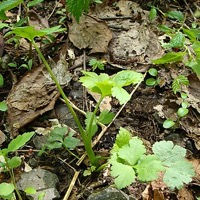

みつば（三つ葉）の生産量 都道府県ランキング
全10県の順位と、とれた量
みつばが日本でいちばん多くとれるのは千葉県です。2,900 tで、全国（1万2,900 t）の22%を占めます。

| 順位 | 都道府県 | 収穫量 | 全国に占める割合 |
|---|---|---|---|
| 1位 | 千葉県 | 2,900 t | 22% |
| 2位 | 愛知県 | 1,710 t | 13% |
| 3位 | 茨城県 | 1,570 t | 12% |
| 4位 | 静岡県 | 1,200 t | 9.3% |
| 5位 | 埼玉県 | 1,190 t | 9.2% |
| 6位 | 大分県 | 956 t | 7.4% |
| 7位 | 大阪府 | 558 t | 4.3% |
| 8位 | 福島県 | 426 t | 3.3% |
| 9位 | 福岡県 | 207 t | 1.6% |
| 10位 | 北海道 | 151 t | 1.2% |
みつばの生産量の推移（令和2年産〜令和6年産）
全国の収穫量は、令和2年産の1万3,400 tから令和6年産の1万2,900 tへ、4%減りました。この間、1位はずっと千葉県です。
| 年 | 全国 | 1位 | 2位 | 3位 |
|---|---|---|---|---|
| 令和6年産 | 1万2,900 t | 千葉県2,900 t | 愛知県1,710 t | 茨城県1,570 t |
| 令和5年産 | 1万3,100 t | 千葉県2,820 t | 愛知県1,870 t | 茨城県1,590 t |
| 令和4年産 | 1万3,400 t | 千葉県2,800 t | 愛知県1,930 t | 茨城県1,640 t |
| 令和3年産 | 1万3,700 t | 千葉県2,550 t | 愛知県1,970 t | 茨城県1,740 t |
| 令和2年産 | 1万3,400 t | 千葉県2,610 t | 茨城県1,710 t | 愛知県1,650 t |
この数字について
- 分類：セリ科
- 全国の収穫量：1万2,900 t
- この数字が表すもの：収穫量（畑や田でとれた重さ）
- 調査：作物統計調査 作況調査（野菜） 令和6年産
- 10県分を調査（調査していない県は順位に入りません）
みつばの生産量について、よくある質問
- みつばの生産量が日本一の都道府県はどこですか？
- 千葉県です。作物統計調査 作況調査（野菜）（令和6年産）で2,900 tでした。
- みつばの生産量ランキング2位・3位はどこですか？
- 2位は愛知県（1,710 t）、3位は茨城県（1,570 t）です。
- みつばの生産量ランキング4位・5位はどこですか？
- 4位は静岡県（1,200 t）、5位は埼玉県（1,190 t）です。みつばの全10県の順位は上の表のとおりです。
- みつばの全国の生産量はどれくらいですか？
- 1万2,900 t（令和6年産）です。